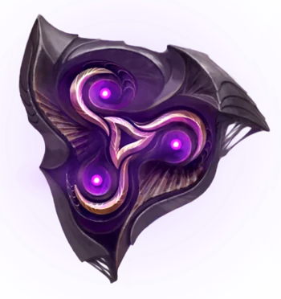
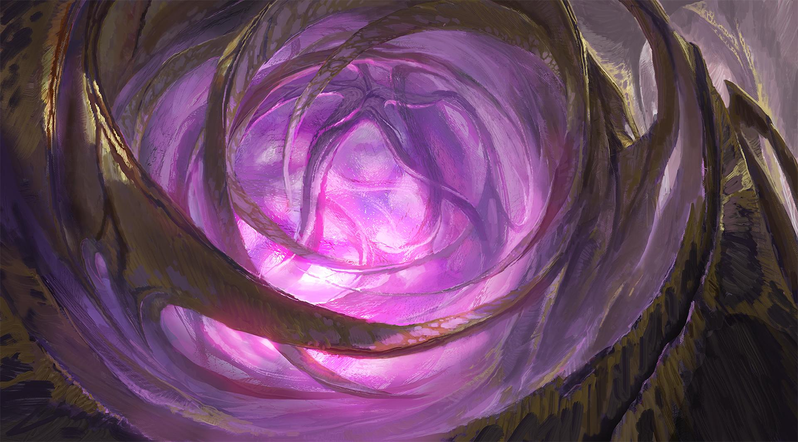
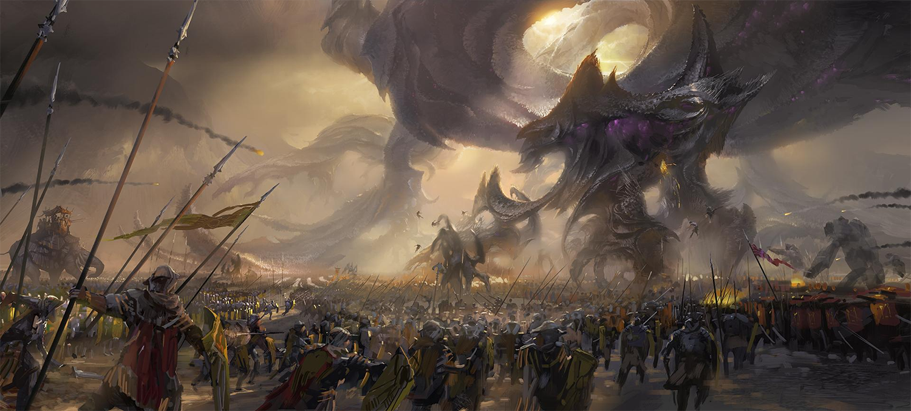
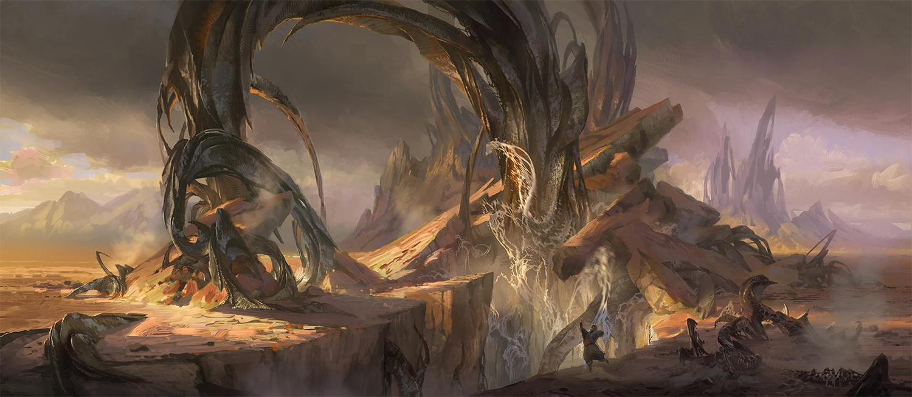
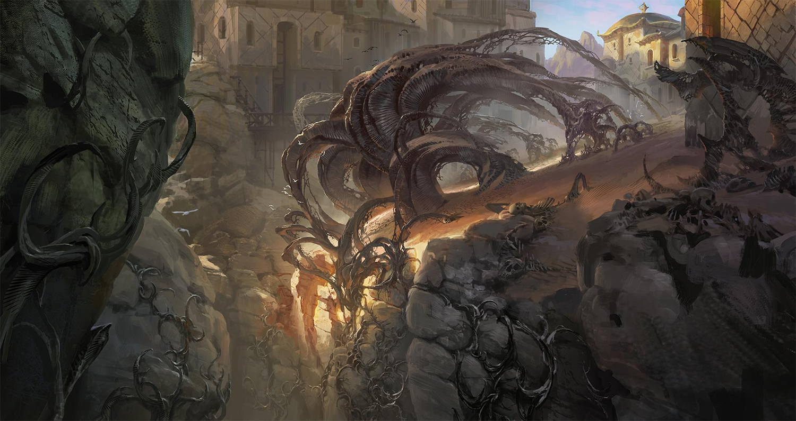
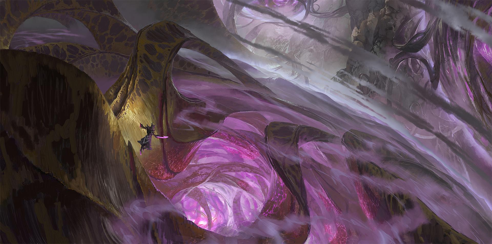

The Void
"For the Void."- Malzahar
Screaming into existence with the birth of the universe, the Void is a manifestation of the unknowable nothingness that lies beyond. It is a force of insatiable hunger, waiting through the eons until its masters, the mysterious Watchers, mark the final time of undoing. Denizens of the Void realm itself are construct-creatures, often of only limited sentience, but tasked with a singular purpose - to usher in total oblivion across Runeterra.
Visions of The Void

An Unknowable Power
In the abyssal darkness, deep underground, it is believed that the first great Void creatures to walk the surface of Runeterra now lie, dormant and unseen. If that is true, then they have waited patiently through the millennia, and it must surely now be time for them to rise once more.

The Fall of Icathia
A great and terrible battle was fought against the Void before the walls of ancient Icathia. In the aftermath, the lands all around the damned city became deserted wastes, and its very existence was struck from the maps of Shurima. It was hoped, perhaps foolishly, that the horrors unleashed there would eventually be forgotten...

The Rupture
On the outskirts of Icathia lies the Rupture—evidence of the Void itself bursting forth from deep beneath the ground, in an age now lost to history. Though the bold and the curious alike have often sought to learn more, only the most foolhardy explorer would ever dare venture into the dark spaces beneath.

Salt The Earth
One of the few known ways to combat the Void is to starve it. With no organic or magical sustenance nearby, the Void’s material growth will slow, until it eventually falls into a dormant state.

The Touch of The Void
Over the centuries, many mortals from the world above have answered the Void’s call, or been dragged down against their will. There are those among them—few and far between—who have survived the encounter... though not a single one of them returnedChampions in The Void
Other Regions